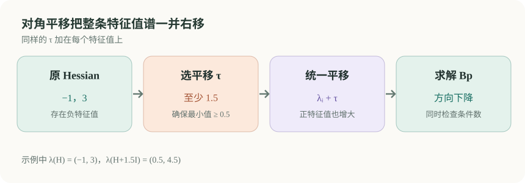

3.4.2 对角平移：为什么给 Hessian 加上 τI
不必显式求出所有特征值，也可以试探一个标量 τ，使 H+τI 变成正定矩阵。这个方法实现简单，却会同时改变每个特征方向上的曲率。
最小特征值为什么决定平移量
对称矩阵 H 的特征值为 λ₁,…,λₙ。由于 I 与 H 共用特征向量，H+τI 的特征值恰好是 λᵢ+τ。因此，要保证所有特征值至少达到 δ＞0，只需 τ≥δ−λ_min(H)，同时取 τ≥0。
实际优化中通常不能廉价地知道最小特征值，特别是在大规模矩阵上。常用策略是尝试 Cholesky 分解；失败则增大 τ，直到分解成功。数值容差和最大尝试次数仍必须设置。
算一个含负曲率的二次模型
取 H=diag(−1,3)、g=(1,2)、安全阈值 δ=0.5。此时 λ_min(H)=−1，最小允许平移 τ=1.5，得到 B=diag(0.5,4.5)。解 Bp=−g，得到 p=(−2,−4/9)，且 gᵀp=−26/9，确实下降。
如果将 H 的特征值分别裁剪至 δ，则得到 B_clip=diag(0.5,3)，与平移得到的 diag(0.5,4.5) 不同。前者条件数为 6，后者为 9。它们都正定，但对原始曲率的改动范围不同。
τ=1 时 B 的最小特征值为零，矩阵奇异；τ=0.5 时 B 仍不定。解法不能仅靠查看对角线上是否出现正数就宣称正定。

如何利用 Cholesky 的成功与失败
简单的数值策略是：先尝试 τ=0；若分解失败，设置一个与矩阵规模相关的正初值，并将 τ 逐步放大（例如每次倍增）后重试。成功时返回正定矩阵的 Cholesky 因子，通过三角代回代解出方向。
不同于直接求特征分解，分解失败本身可成为是否需要增大修正的反馈。严格实现还需考虑舍入误差、规模归一化、试探次数与近奇异矩阵，不能以一个二维演示替代通用数值库。
为什么 τ 过大也不是好事
当 τ 远大于 ‖H‖ 时，(H+τI)⁻¹近似 (1/τ)I，求得的方向趋近 −g/τ，即缩放后的最速下降方向。这样虽然保持下降性，却可能大幅牺牲 Newton 的曲率加速。
一种合格的修正策略不仅追求正定，还要在 H 已足够正定时尽可能保持 E=0。若解处 Hessian 正定，过度平移会妨碍进入使用单位步长的快速局部区间。
交互实验：看 τ 跨越正定门槛
固定 H=diag(−1,3)、g=(1,2)，调整 τ。只有 τ＞1 才严格正定；界面展示特征值和下降方向。
改变参数，观察数值判据
Python：独立计算与断言
对已知特征值的二维矩阵计算最小安全平移，并对比统一平移与特征值裁剪的条件数。
"""Shift a symmetric Hessian by tau times the identity."""
def shifted(tau: float):
return (-1.0 + tau, 3.0 + tau)
def shifted_step(tau: float):
a, b = shifted(tau)
if a <= 0 or b <= 0:
raise ValueError("H+tau*I is not positive definite")
p = (-1.0 / a, -2.0 / b)
slope = p[0] + 2.0*p[1]
return p, slope, max(a,b)/min(a,b)
if __name__ == "__main__":
tau = 1.5
assert shifted(tau) == (0.5, 4.5)
p, slope, kappa = shifted_step(tau)
print("modified direction:",p,"slope:",slope,"condition:",kappa)
assert abs(slope + 26.0/9.0) < 1e-12
assert kappa == 9.0
assert (3.0/0.5) == 6.0 # spectral clipping comparison
try:
shifted_step(0.5)
raise AssertionError("indefinite matrix should be rejected")
except ValueError:
pass自检：当 τ=2 时，两个修正特征值分别是多少？正定是否意味着条件数比 τ=1.5 更好？